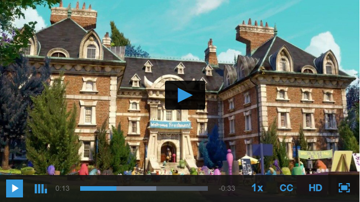

Air Skin Retina for VideoJS 7
Features
- Video.js that is open source HTML5 & Flash video player, as well as YouTube and Vimeo (through plugins), used on over 200,000 websites
- Skin with Air Style
- Retina Ready & Fully Responsive
- HTML5 & CSS3
- Support videojs-logo / videojs-watermark
- Support keyboard shortcuts:
- Up/down arrow or mouse wheel -> control volume
- Right/left arrow -> seek player by 5s
- M -> toggle mute
- F or double click -> toggle fullscreen
- F or Esc -> exits full-screen mode
- 0 -> restart video
- 1-9 -> skip to a particular section of the video (e.g., 0 is 0%, 9 is 90% and 5 goes to the video midpoint)
- Support and updates
- Wishlist Support
- Well Documented

Include the skin on the page
The base Video.js skin is made using HTML and CSS. That means you can build a custom skin by simply taking advantage of the cascading aspect of CSS and overriding the styles you'd like to change.
<link rel="stylesheet" type="text/css" href="./video-js-5.10.4/video-js.min.css>
<link rel="stylesheet" type="text/css" href="./video-js/videojs-air.min.css>
<script type="text/javascript" src="./video-js/video.js" ></script>
The main class name for all skin-specific styles. To make your own skin,
replace all occurrences of 'vjs-default-skin' with a new name. Then add your new
skin name to your video tag instead of the default skin.
<video class="video-js vjs-big-play-centered">
Reference
Changelog
- Launch: The launch of the Air Skin Retina for VideoJS 7 project - 17 November 2018.
- Launch: The launch of the Air Skin Retina for VideoJS 6 project - 16 November 2018.
- Launch: The launch of the Air Skin Retina for VideoJS 5 project - 15 November 2018.
Other Skins
Support
If you have any questions that are not answered in this userguide, or any bugs to report, please contact me via email through my CodeCanyon profile. Contacting through CodeCanyon will prove that you purchased the file.
http://codecanyon.net/user/facetheme